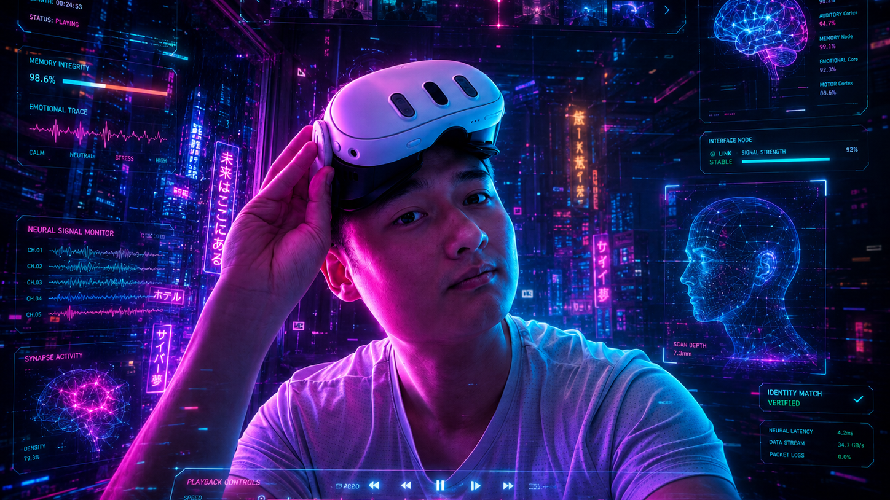
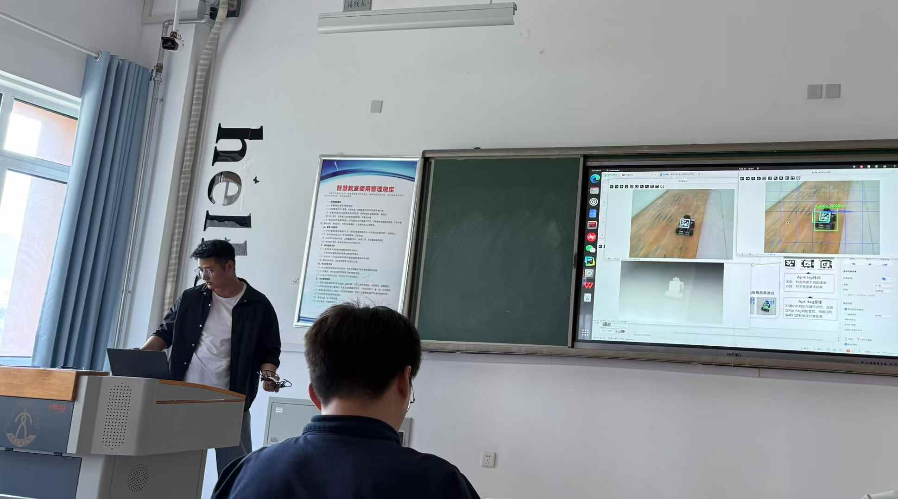
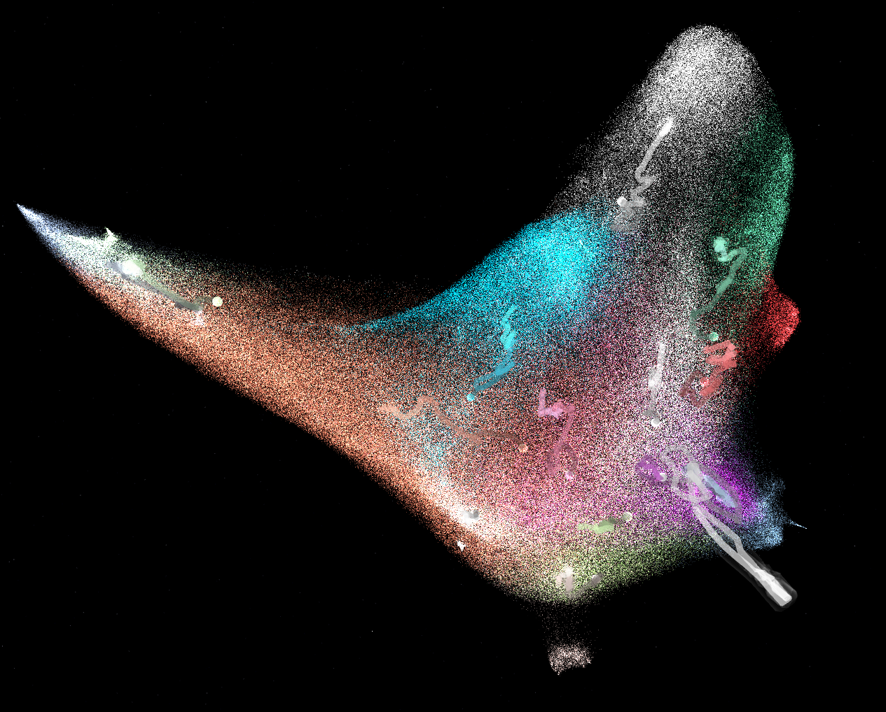

M.Sc. Computer and Information Science
University of Konstanz. Focused on computer vision, deep learning, robotics, SLAM, machine learning, and real-time systems.
E-DAVID program with emphasis on AI-driven data analysis.
AI / Computer Vision Engineer focused on robotics, edge AI, and real-time visual systems.
A VR investigative experience inspired by Cyberpunk 2077 Braindance, built around switching between time and sensory layers to uncover hidden clues in an immersive memory scene.

Built a real-time railway monitoring system using 30+ RTSP streams per site. Deployed AI models on Jetson edge devices and connected detection results through a Kafka pipeline.

Bachelor thesis project implementing real-time target tracking, obstacle avoidance, and end-to-end video-to-control navigation based on visual feedback.

An interactive music visualization project that maps one million songs into a navigable universe, built on the Million Song Dataset with genre classification, dimensionality reduction, and long-term trend analysis.

University of Konstanz. Focused on computer vision, deep learning, robotics, SLAM, machine learning, and real-time systems.
E-DAVID program with emphasis on AI-driven data analysis.
Shandong Jiaotong University. GPA 88.97/100, ranked Top 2/118.
Baigong Information Technology. Developed backend and frontend features for a monitoring platform and designed APIs.
Youxiangtu Intelligent Technology. Researched remote sensing object detection algorithms and graph neural network methods.
National Inspirational Scholarship; Shandong Outstanding Student.
Issued by University of Konstanz.
Huawei Kunpeng Innovation Competition, Provincial 2nd Prize; Lanqiao Cup, National Excellence; AI Competition, Provincial Prize.
Published in Journal of Beijing University of Aeronautics and Astronautics, 2025.
Notes on computer vision, robotics, deep learning systems, and project write-ups.
I am a Computer and Information Science master's student at the University of Konstanz with hands-on experience in computer vision, deep learning, robotics, and real-time systems. My work focuses on deploying AI models on edge devices, building reliable visual pipelines, and applying machine learning to inspection, monitoring, and autonomous navigation problems.
I am open to opportunities and collaborations around computer vision, robotics, edge AI, remote sensing, and real-time monitoring systems. The quickest way to reach me is by email.
chunpo.wu@uni-konstanz.de